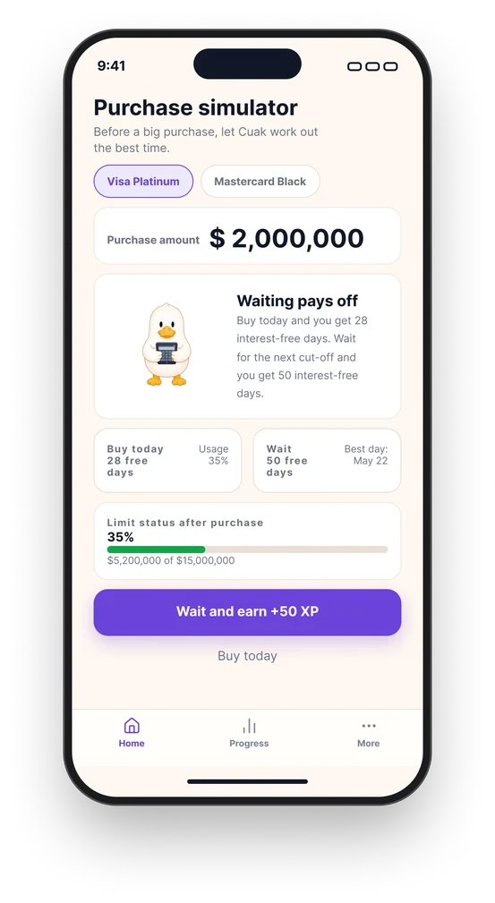

Cuak
Not passed24 screens · last run 26 November 2026

- First run · 10 rules0 errors, 0 warningsWrong: texts with more than one color were skipped.
- Tool fixed · 11 rules6 errors, 6 warnings18 of 24 screens clean. The warnings come from the added rule.
- Current tool · 11 rules6 errors, 26 warnings12 of 24 screens clean. It now also reports spacing off the scale.
| Screen | What disagrees | Findings |
|---|---|---|
| Home · Visa Platinum | Text “Monthly payment”, colors set by hand #6B7280 #111827 | 2 |
| Home · Mastercard Black | Text “Monthly payment”, colors set by hand #6B7280 #111827 | 2 |
| Purchase simulator | Text “Limit status after purchase”, colors set by hand #6B7280 #111827 | 2 |
| 12 screens | Gap or padding off the spacing scale (warning) | 20 |
| 6 screens | Tab bar drawn by hand instead of using the component (warning) | 6 |
Open: the 32 findings are not fixed in Figma. Writing down why each exception exists showed that three screens with their own back button were excused from the back rule. Their layers are renamed, and the rule now checks 19 screens instead of 10.
The Cuak system →